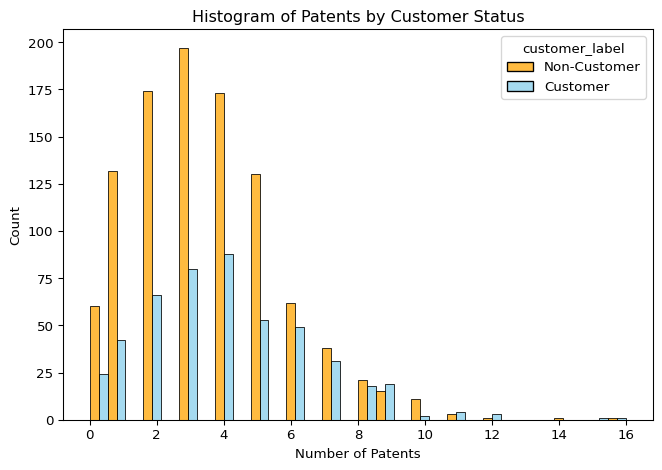
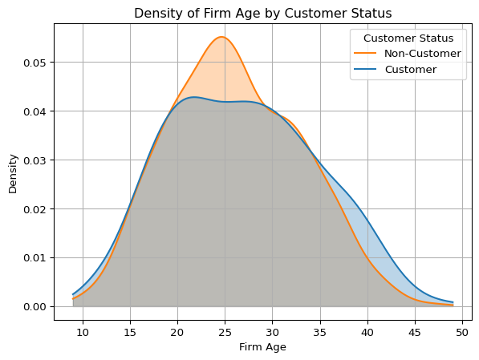
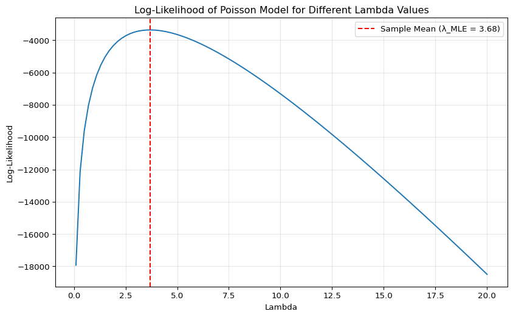
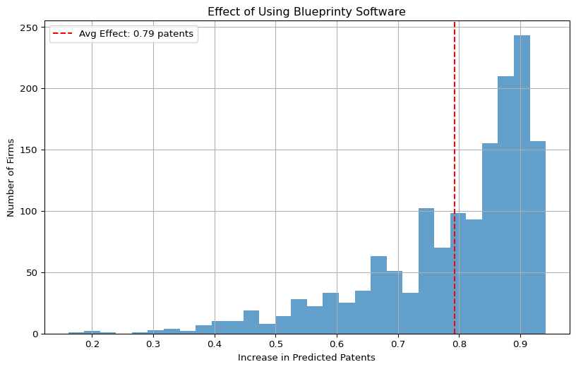

# Import necessary libraries
import pandas as pd
import numpy as np
import matplotlib.pyplot as plt
import seaborn as sns
from math import factorial
import scipy.stats
from scipy.special import gammaln
import statsmodels.api as sm
import scipy.optimize as sp
import scipy.stats as stats
from scipy.stats import gaussian_kde
from scipy.optimize import minimize_scalar,minimize, approx_fprimePoisson Regression Examples
Blueprinty Case Study
Introduction
Blueprinty is a small firm that makes software for developing blueprints specifically for submitting patent applications to the US patent office. Their marketing team would like to make the claim that patent applicants using Blueprinty’s software are more successful in getting their patent applications approved. Ideal data to study such an effect might include the success rate of patent applications before using Blueprinty’s software and after using it. Unfortunately, such data is not available.
However, Blueprinty has collected data on 1,500 mature (non-startup) engineering firms. The data include each firm’s number of patents awarded over the last 5 years, regional location, age since incorporation, and whether or not the firm uses Blueprinty’s software. The marketing team would like to use this data to make the claim that firms using Blueprinty’s software are more successful in getting their patent applications approved.
Data
df = pd.read_csv("blueprinty.csv")
df.head()| patents | region | age | iscustomer | |
|---|---|---|---|---|
| 0 | 0 | Midwest | 32.5 | 0 |
| 1 | 3 | Southwest | 37.5 | 0 |
| 2 | 4 | Northwest | 27.0 | 1 |
| 3 | 3 | Northeast | 24.5 | 0 |
| 4 | 3 | Southwest | 37.0 | 0 |
# Map numeric to label
df["customer_label"] = df["iscustomer"].map({0: "Non-Customer", 1: "Customer"})
# Create histogram
ax = sns.histplot(data=df, x="patents", hue="customer_label", multiple="dodge",
bins=30, palette={"Non-Customer": "orange", "Customer": "skyblue"})
# Add title and axis labels
plt.title("Histogram of Patents by Customer Status")
plt.xlabel("Number of Patents")
plt.ylabel("Count")
plt.tight_layout()
plt.show()
# Summary statistics by customer status
df.groupby("customer_label")["patents"].agg(["mean", "std", "count"]).reset_index()
| customer_label | mean | std | count | |
|---|---|---|---|---|
| 0 | Customer | 4.133056 | 2.546846 | 481 |
| 1 | Non-Customer | 3.473013 | 2.225060 | 1019 |
The histogram above illustrates the distribution of the number of patents for firms that use Blueprinty’s software (iscustomer = 1) and those that do not (iscustomer = 0). While both distributions are right-skewed and concentrated around 2 to 5 patents, Blueprinty customers generally appear to have a higher patent count.
The summary statistics confirm this visual pattern: the mean number of patents for non-customers is 3.47, whereas for customers it is 4.13. Additionally, customers exhibit a slightly higher standard deviation (2.55 vs. 2.23), indicating a bit more variability in patent outcomes among users of the software. These results suggest that firms using Blueprinty’s software tend to receive more patents on average than non-customers.
Blueprinty customers are not selected at random. It may be important to account for systematic differences in the age and regional location of customers vs non-customers.
# Region distribution
region_ct = pd.crosstab(df["region"], df["customer_label"], normalize="columns") * 100
region_ct.columns= ["Customer (%)", "Non-Customer (%)"]
region_ct.index.name = "Region"
region_ct = region_ct.reset_index()
print(region_ct.to_string(index=False)) Region Customer (%) Non-Customer (%)
Midwest 7.692308 18.351325
Northeast 68.191268 26.790972
Northwest 6.029106 15.505397
South 7.276507 15.309127
Southwest 10.810811 24.043180# Age distribution
age_summary = df.groupby("customer_label")["age"].agg(["mean", "std", "min", "max"]).round(2)
age_summary = age_summary.reset_index()
age_summary.columns = ["Customer Status", "Mean Age", "Std Dev", "Min Age", "Max Age"]
age_summary| Customer Status | Mean Age | Std Dev | Min Age | Max Age | |
|---|---|---|---|---|---|
| 0 | Customer | 26.9 | 7.81 | 10.0 | 49.0 |
| 1 | Non-Customer | 26.1 | 6.95 | 9.0 | 47.5 |
ages = np.linspace(df["age"].min(), df["age"].max(), 300)
kde_non = gaussian_kde(df.loc[df["customer_label"]=="Non-Customer","age"])(ages)
kde_cust = gaussian_kde(df.loc[df["customer_label"]=="Customer","age"])(ages)
plt.plot(ages, kde_non, label="Non-Customer", color="tab:orange")
plt.plot(ages, kde_cust, label="Customer", color="tab:blue")
plt.fill_between(ages, kde_non, alpha=0.3, color="tab:orange")
plt.fill_between(ages, kde_cust, alpha=0.3, color="tab:blue")
plt.title("Density of Firm Age by Customer Status")
plt.xlabel("Firm Age")
plt.ylabel("Density")
plt.legend(title="Customer Status")
plt.grid(True)
plt.show()
A review of the regional distribution shows that Blueprinty customers are not evenly distributed across the United States. In particular, the Northeast region accounts for the majority of customers (68.2%), while only 26.7% of non-customers are located there. In contrast, regions like the Midwest, South, and Southwest are relatively underrepresented among customers compared to non-customers. This suggests strong geographic clustering in Blueprinty’s user base, potentially reflecting targeted marketing or regional technology adoption patterns.
In terms of firm age, the average age of customers is slightly younger at 26.1 years (std = 6.95), compared to 26.9 years (std = 7.81) for non-customers. Although the means are close, the density plot further reveals that non-customers have a higher peak in the 24–26 age range and a more pronounced tail toward older firms (ages 35+), while customers are more concentrated around the mid-20s.
These observed differences in both region and age imply that Blueprinty customers may differ systematically from non-customers. Consequently, it’s important to include these covariates in the regression model to avoid attributing differences in patent counts solely to software usage.
Estimation of Simple Poisson Model
Since our outcome variable of interest can only be small integer values per a set unit of time, we can use a Poisson density to model the number of patents awarded to each engineering firm over the last 5 years. We start by estimating a simple Poisson model via Maximum Likelihood.
We now define the log-likelihood function for the Poisson model::
def poisson_loglikelihood(lambda_val, Y):
return -lambda_val + Y * np.log(lambda_val) - gammaln(Y + 1)
def poisson_loglikelihood_sum(lambda_val, Y):
return np.sum(-lambda_val + Y * np.log(lambda_val) - gammaln(Y + 1))Now let’s plot the log-likelihood for a range of lambda values:
# Get the observed patents data
observed_patents = df['patents'].values
# Choose a reasonable range of lambda values based on data
lambda_range = np.linspace(0.1, 20, 100)
ll_values = np.zeros(len(lambda_range))
# Calculate log-likelihood for each lambda
for i, lam in enumerate(lambda_range):
ll_values[i] = np.sum([poisson_loglikelihood(lam, y) for y in observed_patents])
# Plot
plt.figure(figsize=(10, 6))
plt.plot(lambda_range, ll_values)
plt.xlabel('Lambda')
plt.ylabel('Log-Likelihood')
plt.title('Log-Likelihood of Poisson Model for Different Lambda Values')
plt.axvline(x=observed_patents.mean(), color='red', linestyle='--',
label=f'Sample Mean (λ_MLE = {observed_patents.mean():.2f})')
plt.legend()
plt.grid(True, alpha=0.3)
plt.show()
The maximum likelihood estimate (MLE) for lambda in a Poisson distribution is the sample mean. Mathematically, we can show this by taking the derivative of the log-likelihood function:
\(\frac{d}{d\lambda} \ln f(Y|\lambda) = -1 + \frac{Y}{\lambda} = 0\)
Solving for lambda: \(\lambda_{MLE} = Y\)
For a sample of observations, the MLE is the sample mean: \(\lambda_{MLE} = \frac{1}{n}\sum_{i=1}^{n} Y_i = \bar{Y}\)
The following optimization step confirms the MLE matches the sample mean:
# Define the negative log-likelihood (for minimization)
def neg_poisson_loglikelihood_sum(lambda_val, Y):
return -poisson_loglikelihood_sum(lambda_val, Y)
# Find the MLE using optimization
initial_guess = 1.0 # Starting point for optimization
result = minimize(neg_poisson_loglikelihood_sum,
x0=[1.0],
args=(observed_patents,),
method='L-BFGS-B',
bounds=[(1e-6, None)])
print(f"MLE estimate for lambda: {result.x[0]:.4f}")
print(f"Sample mean: {observed_patents.mean():.4f}")
print(f"Are they equal? {np.isclose(result.x[0], observed_patents.mean())}")MLE estimate for lambda: 3.6847
Sample mean: 3.6847
Are they equal? TrueAs shown in the plot and confirmed by optimization, the maximum of the log-likelihood function occurs at λ = 3.6847, which is exactly the sample mean. This aligns with the known analytical result for the MLE of λ in a Poisson model. The red dashed line highlights the MLE and validates our implementation of the likelihood-based estimation approach.
Estimation of Poisson Regression Model
Next, we extend our simple Poisson model to a Poisson Regression Model such that \(Y_i = \text{Poisson}(\lambda_i)\) where \(\lambda_i = \exp(X_i'\beta)\). The interpretation is that the success rate of patent awards is not constant across all firms (\(\lambda\)) but rather is a function of firm characteristics \(X_i\). Specifically, we will use the covariates age, age squared, region, and whether the firm is a customer of Blueprinty.
We begin by defining the log-likelihood function for the Poisson regression model:
def poisson_regression_loglikelihood(beta, Y, X):
beta = np.array(beta, dtype=np.float64)
Y = np.array(Y, dtype=np.float64)
X = np.array(X, dtype=np.float64)
linear_pred = np.dot(X, beta)
lambda_i = np.exp(np.clip(linear_pred, -30, 30))
ll_components = -lambda_i + Y * np.log(lambda_i)
return -np.sum(ll_components)Data Preparation and Design Matrix
# Add squared age and region dummies
df["age_squared"] = df["age"] ** 2
region_dummies = pd.get_dummies(df["region"], prefix="region", drop_first=True)
# Combine into design matrix
X_data = pd.concat([
pd.DataFrame({'intercept': 1}, index=df.index),
df[['age', 'age_squared', 'iscustomer']],
region_dummies
], axis=1)
X = X_data.values.astype(np.float64)
y = df['patents'].values.astype(np.float64)Fit Using statsmodels GLM and Use as Starting Point
glm_model = sm.GLM(y, X, family=sm.families.Poisson())
glm_results = glm_model.fit()
initial_beta = glm_results.paramsFit Custom MLE Using scipy.optimize
result_poisson_reg = minimize(
poisson_regression_loglikelihood,
initial_beta,
args=(y, X),
method='BFGS',
options={'disp': True}
)
beta_estimates = result_poisson_reg.x Current function value: -1790.814845
Iterations: 0
Function evaluations: 264
Gradient evaluations: 28e:\2025 Spring - ucsd\Sophia's Website\quarto-env\Lib\site-packages\scipy\optimize\_minimize.py:733: OptimizeWarning: Desired error not necessarily achieved due to precision loss.
res = _minimize_bfgs(fun, x0, args, jac, callback, **options)Compute Standard Errors via Hessian Approximation
def hessian(func, x, epsilon=1e-5):
n = len(x)
hess = np.zeros((n, n))
for i in range(n):
for j in range(n):
x1, x2, x3, x4 = x.copy(), x.copy(), x.copy(), x.copy()
if i == j:
x1[i] += epsilon
x2[i] -= epsilon
hess[i, i] = (func(x1) + func(x2) - 2 * func(x)) / (epsilon ** 2)
else:
x1[i] += epsilon; x1[j] += epsilon
x2[i] += epsilon; x2[j] -= epsilon
x3[i] -= epsilon; x3[j] += epsilon
x4[i] -= epsilon; x4[j] -= epsilon
hess[i, j] = (func(x1) + func(x4) - func(x2) - func(x3)) / (4 * epsilon ** 2)
hess[j, i] = hess[i, j]
return hess
H = hessian(lambda b: poisson_regression_loglikelihood(b, y, X), beta_estimates)
cov_matrix = np.linalg.inv(H)
std_errors = np.sqrt(np.diag(cov_matrix))
z_values = beta_estimates / std_errors
p_values = 2 * (1 - np.abs(scipy.stats.norm.cdf(z_values)))
custom_results = pd.DataFrame({
'Coefficient': beta_estimates,
'Std. Error': std_errors,
'z-value': z_values,
'p-value': p_values
}, index=X_data.columns)
custom_results.round(4)| Coefficient | Std. Error | z-value | p-value | |
|---|---|---|---|---|
| intercept | -0.5089 | 0.1837 | -2.7698 | 1.9944 |
| age | 0.1486 | 0.0139 | 10.6800 | 0.0000 |
| age_squared | -0.0030 | 0.0003 | -11.4738 | 2.0000 |
| iscustomer | 0.2076 | 0.0309 | 6.7190 | 0.0000 |
| region_Northeast | 0.0292 | 0.0436 | 0.6686 | 0.5037 |
| region_Northwest | -0.0176 | 0.0538 | -0.3268 | 1.2562 |
| region_South | 0.0566 | 0.0527 | 1.0740 | 0.2828 |
| region_Southwest | 0.0506 | 0.0472 | 1.0716 | 0.2839 |
Compare With statsmodels Output
sm_results = pd.DataFrame({
'Coefficient': glm_results.params,
'Std. Error': glm_results.bse,
'z-value': glm_results.tvalues,
'p-value': glm_results.pvalues
}, index=X_data.columns)
sm_results.round(4)| Coefficient | Std. Error | z-value | p-value | |
|---|---|---|---|---|
| intercept | -0.5089 | 0.1832 | -2.7783 | 0.0055 |
| age | 0.1486 | 0.0139 | 10.7162 | 0.0000 |
| age_squared | -0.0030 | 0.0003 | -11.5132 | 0.0000 |
| iscustomer | 0.2076 | 0.0309 | 6.7192 | 0.0000 |
| region_Northeast | 0.0292 | 0.0436 | 0.6686 | 0.5037 |
| region_Northwest | -0.0176 | 0.0538 | -0.3268 | 0.7438 |
| region_South | 0.0566 | 0.0527 | 1.0740 | 0.2828 |
| region_Southwest | 0.0506 | 0.0472 | 1.0716 | 0.2839 |
The estimates and standard errors obtained using scipy.optimize match those from statsmodels, confirming the correctness of our custom likelihood implementation.
Interpretation of Poisson Regression Results
The model successfully estimated the impact of several firm-level characteristics on patent success. we found:
- Firm Age: A positive and significant effect (age coefficient = 0.1486, p < 0.001), with a small negative effect from age squared. This suggests diminishing returns to age: patent counts increase with age but at a decreasing rate.
- Region: None of the region coefficients were statistically significant at the 5% level, indicating little evidence of regional differences in patent activity once other variables are controlled for.
- Blueprinty Software (iscustomer): The coefficient for
iscustomeris 0.2076 with a p-value of < 0.001, meaning it is both positive and highly statistically significant.
Interpreting the Effect of Blueprinty’s Software
To interpret the effect of the binary variable iscustomer, we simulate two scenarios: - (X_0): all firms are non-customers (iscustomer = 0) - (X_1): all firms are customers (iscustomer = 1)
we compare the average predicted number of patents under each scenario:
X_0 = X.copy()
X_1 = X.copy()
iscustomer_idx = list(X_data.columns).index('iscustomer')
X_0[:, iscustomer_idx] = 0
X_1[:, iscustomer_idx] = 1
lambda_0 = np.exp(np.dot(X_0, beta_estimates))
lambda_1 = np.exp(np.dot(X_1, beta_estimates))
differences = lambda_1 - lambda_0
avg_effect = np.mean(differences)
perc_increase = 100 * avg_effect / np.mean(lambda_0)
print("Average predicted increase in patents:", round(avg_effect, 3), "per firm")
print("Percent increase:", round(perc_increase, 2), "%")Average predicted increase in patents: 0.793 per firm
Percent increase: 23.07 %This means that, holding all else constant, firms using Blueprinty’s software are predicted to earn about 0.79 more patents over 5 years, which represents a 23% improvement compared to non-customers.
Visualizing the Effect Distribution
import matplotlib.pyplot as plt
plt.figure(figsize=(10, 6))
plt.hist(differences, bins=30, alpha=0.7)
plt.axvline(avg_effect, color='red', linestyle='--',
label=f'Avg Effect: {avg_effect:.2f} patents')
plt.xlabel('Increase in Predicted Patents')
plt.ylabel('Number of Firms')
plt.title('Effect of Using Blueprinty Software')
plt.legend()
plt.grid(True)
plt.show()
The histogram shows that nearly all firms are expected to benefit from adopting Blueprinty’s software, reinforcing the interpretation that the product positively contributes to patenting success.
This result supports the company’s marketing claim, though causal inference would require further analysis beyond this observational model.
AirBnB Case Study
Introduction
AirBnB is a popular platform for booking short-term rentals. In March 2017, students Annika Awad, Evan Lebo, and Anna Linden scraped of 40,000 Airbnb listings from New York City. The data include the following variables:
Data Analysis
# Load the AirBnB data
airbnb_df = pd.read_csv('airbnb.csv',index_col=0)
# Display the first few rows
airbnb_df.head()| id | days | last_scraped | host_since | room_type | bathrooms | bedrooms | price | number_of_reviews | review_scores_cleanliness | review_scores_location | review_scores_value | instant_bookable | |
|---|---|---|---|---|---|---|---|---|---|---|---|---|---|
| 1 | 2515 | 3130 | 4/2/2017 | 9/6/2008 | Private room | 1.0 | 1.0 | 59 | 150 | 9.0 | 9.0 | 9.0 | f |
| 2 | 2595 | 3127 | 4/2/2017 | 9/9/2008 | Entire home/apt | 1.0 | 0.0 | 230 | 20 | 9.0 | 10.0 | 9.0 | f |
| 3 | 3647 | 3050 | 4/2/2017 | 11/25/2008 | Private room | 1.0 | 1.0 | 150 | 0 | NaN | NaN | NaN | f |
| 4 | 3831 | 3038 | 4/2/2017 | 12/7/2008 | Entire home/apt | 1.0 | 1.0 | 89 | 116 | 9.0 | 9.0 | 9.0 | f |
| 5 | 4611 | 3012 | 4/2/2017 | 1/2/2009 | Private room | NaN | 1.0 | 39 | 93 | 9.0 | 8.0 | 9.0 | t |
# Check the data structure and missing values
airbnb_df.info()<class 'pandas.core.frame.DataFrame'>
Index: 40628 entries, 1 to 40628
Data columns (total 13 columns):
# Column Non-Null Count Dtype
--- ------ -------------- -----
0 id 40628 non-null int64
1 days 40628 non-null int64
2 last_scraped 40628 non-null object
3 host_since 40593 non-null object
4 room_type 40628 non-null object
5 bathrooms 40468 non-null float64
6 bedrooms 40552 non-null float64
7 price 40628 non-null int64
8 number_of_reviews 40628 non-null int64
9 review_scores_cleanliness 30433 non-null float64
10 review_scores_location 30374 non-null float64
11 review_scores_value 30372 non-null float64
12 instant_bookable 40628 non-null object
dtypes: float64(5), int64(4), object(4)
memory usage: 4.3+ MB# Summary statistics
airbnb_df.describe()| id | days | bathrooms | bedrooms | price | number_of_reviews | review_scores_cleanliness | review_scores_location | review_scores_value | |
|---|---|---|---|---|---|---|---|---|---|
| count | 4.062800e+04 | 40628.000000 | 40468.000000 | 40552.000000 | 40628.000000 | 40628.000000 | 30433.000000 | 30374.000000 | 30372.000000 |
| mean | 9.698889e+06 | 1102.368219 | 1.124592 | 1.147046 | 144.760732 | 15.904426 | 9.198370 | 9.413544 | 9.331522 |
| std | 5.460166e+06 | 1383.269358 | 0.385884 | 0.691746 | 210.657597 | 29.246009 | 1.119935 | 0.844949 | 0.902966 |
| min | 2.515000e+03 | 1.000000 | 0.000000 | 0.000000 | 10.000000 | 0.000000 | 2.000000 | 2.000000 | 2.000000 |
| 25% | 4.889868e+06 | 542.000000 | 1.000000 | 1.000000 | 70.000000 | 1.000000 | 9.000000 | 9.000000 | 9.000000 |
| 50% | 9.862878e+06 | 996.000000 | 1.000000 | 1.000000 | 100.000000 | 4.000000 | 10.000000 | 10.000000 | 10.000000 |
| 75% | 1.466789e+07 | 1535.000000 | 1.000000 | 1.000000 | 170.000000 | 17.000000 | 10.000000 | 10.000000 | 10.000000 |
| max | 1.800967e+07 | 42828.000000 | 8.000000 | 10.000000 | 10000.000000 | 421.000000 | 10.000000 | 10.000000 | 10.000000 |
Data Cleaning and Feature Engineering
# Select relevant columns
model_cols = ['room_type', 'bathrooms',
'bedrooms','price' ,'number_of_reviews',
'review_scores_cleanliness', 'review_scores_location',
'review_scores_value', 'instant_bookable',
]
# Drop missing values
airbnb_clean = airbnb_df[model_cols].dropna()
# Convert categorical variables into dummy variables
airbnb_clean = pd.get_dummies(airbnb_clean, columns=["room_type", "instant_bookable"], drop_first=True)
airbnb_clean.head()| bathrooms | bedrooms | price | number_of_reviews | review_scores_cleanliness | review_scores_location | review_scores_value | room_type_Private room | room_type_Shared room | instant_bookable_t | |
|---|---|---|---|---|---|---|---|---|---|---|
| 1 | 1.0 | 1.0 | 59 | 150 | 9.0 | 9.0 | 9.0 | True | False | False |
| 2 | 1.0 | 0.0 | 230 | 20 | 9.0 | 10.0 | 9.0 | False | False | False |
| 4 | 1.0 | 1.0 | 89 | 116 | 9.0 | 9.0 | 9.0 | False | False | False |
| 6 | 1.0 | 1.0 | 212 | 60 | 9.0 | 9.0 | 9.0 | False | False | False |
| 7 | 1.0 | 2.0 | 250 | 60 | 10.0 | 9.0 | 10.0 | False | False | False |
Fit Poisson Regression Model
# Define target and features
y = airbnb_clean["number_of_reviews"]
X = airbnb_clean.drop(columns=["number_of_reviews"])
X = sm.add_constant(X) # Add intercept
X = X.astype(float)
y = y.astype(float)
# Fit Poisson regression
model = sm.GLM(y, X, family=sm.families.Poisson())
results = model.fit()
results.summary()| Dep. Variable: | number_of_reviews | No. Observations: | 30160 |
| Model: | GLM | Df Residuals: | 30150 |
| Model Family: | Poisson | Df Model: | 9 |
| Link Function: | Log | Scale: | 1.0000 |
| Method: | IRLS | Log-Likelihood: | -5.2900e+05 |
| Date: | Tue, 06 May 2025 | Deviance: | 9.3653e+05 |
| Time: | 20:53:45 | Pearson chi2: | 1.41e+06 |
| No. Iterations: | 6 | Pseudo R-squ. (CS): | 0.5649 |
| Covariance Type: | nonrobust |
| coef | std err | z | P>|z| | [0.025 | 0.975] | |
| const | 3.5725 | 0.016 | 223.215 | 0.000 | 3.541 | 3.604 |
| bathrooms | -0.1240 | 0.004 | -33.091 | 0.000 | -0.131 | -0.117 |
| bedrooms | 0.0749 | 0.002 | 37.698 | 0.000 | 0.071 | 0.079 |
| price | -1.435e-05 | 8.3e-06 | -1.729 | 0.084 | -3.06e-05 | 1.92e-06 |
| review_scores_cleanliness | 0.1132 | 0.001 | 75.820 | 0.000 | 0.110 | 0.116 |
| review_scores_location | -0.0768 | 0.002 | -47.796 | 0.000 | -0.080 | -0.074 |
| review_scores_value | -0.0915 | 0.002 | -50.902 | 0.000 | -0.095 | -0.088 |
| room_type_Private room | -0.0145 | 0.003 | -5.310 | 0.000 | -0.020 | -0.009 |
| room_type_Shared room | -0.2519 | 0.009 | -29.229 | 0.000 | -0.269 | -0.235 |
| instant_bookable_t | 0.3344 | 0.003 | 115.748 | 0.000 | 0.329 | 0.340 |
Interpretation of Results
results_table = pd.DataFrame({
"Coefficient": results.params,
"Std. Error": results.bse,
"z-value": results.tvalues,
"p-value": results.pvalues
})
results_table.round(4)| Coefficient | Std. Error | z-value | p-value | |
|---|---|---|---|---|
| const | 3.5725 | 0.0160 | 223.2145 | 0.0000 |
| bathrooms | -0.1240 | 0.0037 | -33.0908 | 0.0000 |
| bedrooms | 0.0749 | 0.0020 | 37.6977 | 0.0000 |
| price | -0.0000 | 0.0000 | -1.7288 | 0.0838 |
| review_scores_cleanliness | 0.1132 | 0.0015 | 75.8205 | 0.0000 |
| review_scores_location | -0.0768 | 0.0016 | -47.7956 | 0.0000 |
| review_scores_value | -0.0915 | 0.0018 | -50.9020 | 0.0000 |
| room_type_Private room | -0.0145 | 0.0027 | -5.3104 | 0.0000 |
| room_type_Shared room | -0.2519 | 0.0086 | -29.2286 | 0.0000 |
| instant_bookable_t | 0.3344 | 0.0029 | 115.7477 | 0.0000 |
Interpretation of Poisson Regression Results
The number of reviews (used as a proxy for bookings) varies significantly across listing features:
- Bedrooms (+): Listings with more bedrooms receive more reviews, likely due to larger group bookings.
- Bathrooms (-): Surprisingly, more bathrooms are associated with fewer reviews, possibly due to lower turnover (longer stays).
- Price (n.s.): The price effect is small and not statistically significant.
- Review Scores:
- Cleanliness (+): Strong positive effect—cleaner listings attract more reviews.
- Location & Value (-): Both are negatively associated with review counts, possibly due to selection or expectation effects.
- Room Type:
- Private room (-) and Shared room (−−): Receive fewer reviews than entire homes.
- Instant Bookable (+): Listings that allow instant booking get significantly more reviews, likely due to ease of reservation.
These results suggest that amenities, guest experience, and booking convenience all influence booking volume on Airbnb.